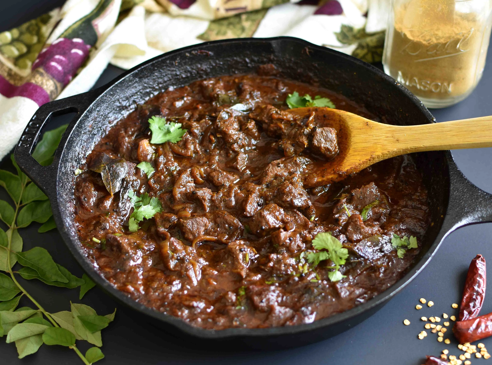

Kerala Style Beef Curry

Description:
Kerala style beef curry is a rich and flavorful South Indian dish that combines tender beef with aromatic spices and coconut milk. This recipe will guide you through the steps to prepare this delicious and hearty curry.
Ingredients:
- For Marinating:
- 500 grams (1 pound) of beef, cut into bite-sized pieces
- 1 teaspoon of turmeric powder
- 1 teaspoon of red chili powder
- Salt to taste
- For the Curry:
- 2 tablespoons of coconut oil
- 1 onion, finely chopped
- 2 tomatoes, finely chopped
- 1 sprig of curry leaves
- 2 green chilies, slit
- 1-inch piece of ginger, minced
- 4-5 cloves of garlic, minced
- 1 teaspoon of mustard seeds
- 1 teaspoon of fenugreek seeds
- 1 cinnamon stick
- 3-4 cloves
- 3-4 green cardamom pods
- 1-2 dried red chilies
- 1 teaspoon of black peppercorns
- 1 tablespoon of coriander powder
- 1/2 teaspoon of fennel seeds
- 1/2 teaspoon of cumin seeds
- 1/2 teaspoon of garam masala
- 1 cup of thick coconut milk
- 2 cups of water
- Salt to taste
- Fresh coriander leaves for garnish
Steps:
- Marinating the Beef:
- In a mixing bowl, combine the beef pieces with turmeric powder, red chili powder, and salt.
- Mix well, ensuring the beef is evenly coated with the spices.
- Allow the beef to marinate for at least 30 minutes or longer in the refrigerator.
- Cooking the Beef:
- Heat coconut oil in a large, heavy-bottomed pan or a pressure cooker over medium heat.
- Add mustard seeds and fenugreek seeds. When they start to splutter, add the cinnamon stick, cloves, green cardamom pods, dried red chilies, and black peppercorns. Sauté for a minute until aromatic.
- Add the chopped onions and curry leaves. Sauté until the onions turn golden brown.
- Add minced ginger and garlic, and sauté for another 2-3 minutes until the raw smell disappears.
- Add the marinated beef and sear it on all sides until it's browned.
- Spices and Tomatoes:
- Stir in coriander powder, fennel seeds, and cumin seeds. Cook for a couple of minutes until the spices are fragrant.
- Add the chopped tomatoes and cook until they turn soft and the oil starts to separate.
- Pressure Cooking (Optional):
- If using a pressure cooker, add water and pressure cook the beef for about 3-4 whistles until it's tender. Release the pressure naturally.
- Simmer and Finish:
- If not using a pressure cooker, add water to the pan, cover, and simmer the beef for about 45 minutes to 1 hour or until it becomes tender.
- Once the beef is tender, add green chilies, garam masala, and thick coconut milk. Stir well and let it simmer for another 10-15 minutes.
- Garnish and Serve:
- Adjust the salt as needed, garnish with fresh coriander leaves, and remove from heat.
- Serve your Kerala style beef curry hot with steamed rice, appam, or paratha for a delightful South Indian meal.